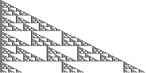
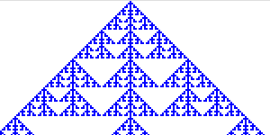
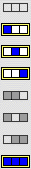
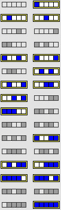
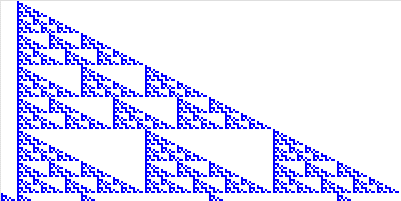

1. Here is Pascal's triangle for
|  |  |  |
| We see this CA gives a live cell for all nbhd configs with 1 or 3 live cells. |
| Knowing that live cells on the left side of the nbhd give patterns growig to the right, we use all configs of 1 or 3 live cells in the center and two left cells. For each of these, all four combinations of the right two nhbd cells are used. |
| For example, all these configurations give a live cell if the left-most cell is alive, regardlass of the states of the two right cells. |
Here are the corresponding rule, and pattern.
|  |  |
Return to CA rule Exercises.